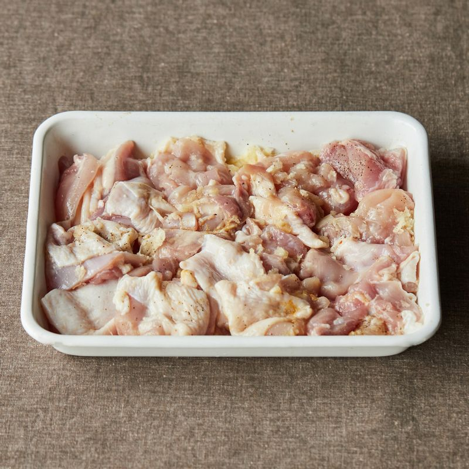
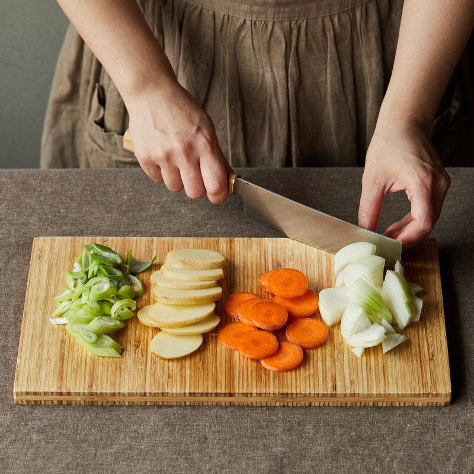
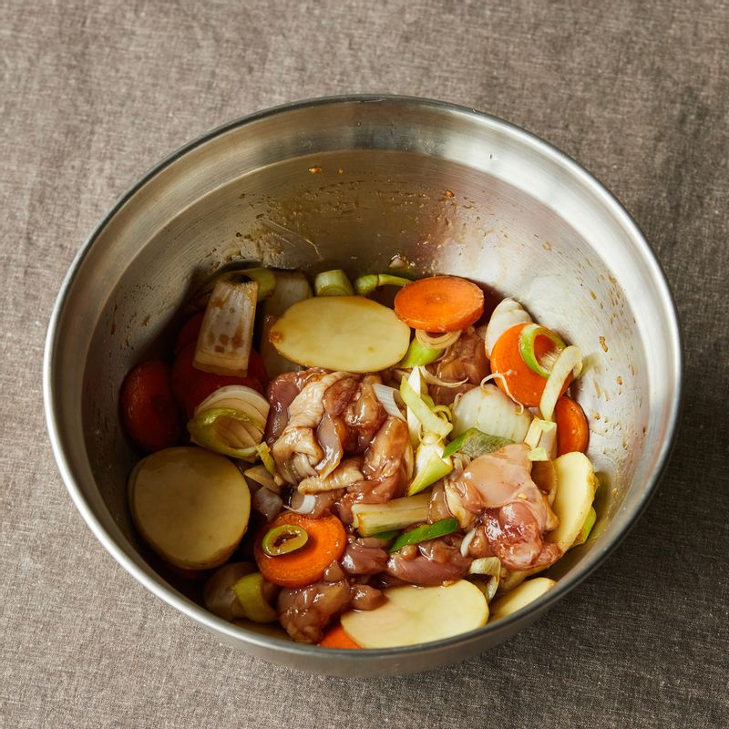
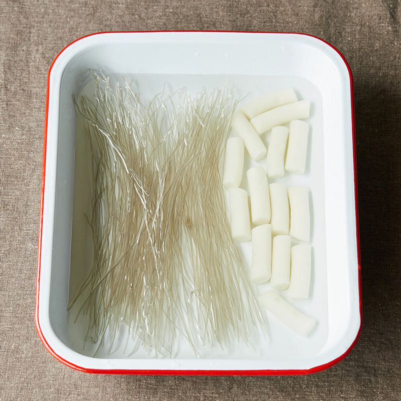
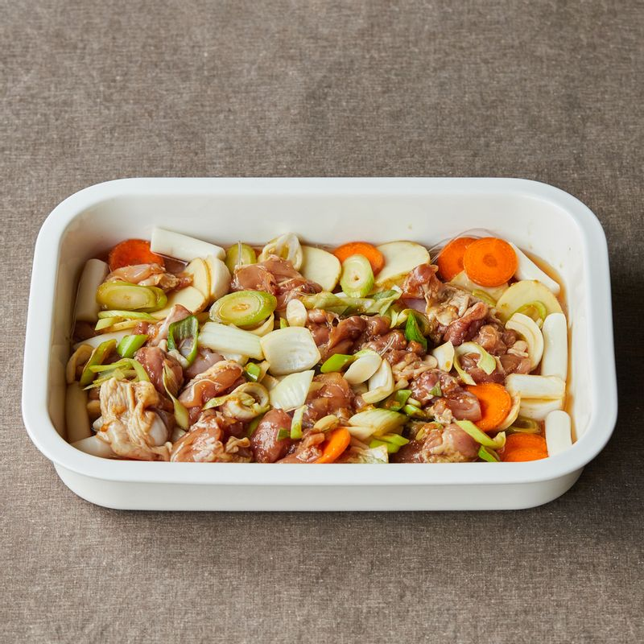
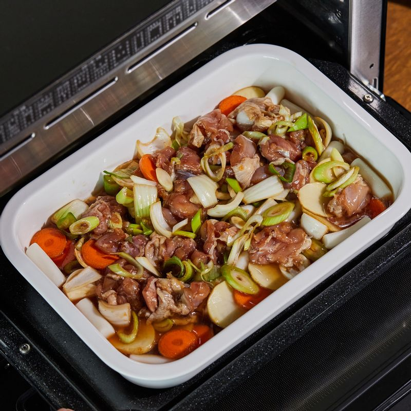

닭다리살은 칼집을 넣고 4등분으로 자른 후 밑간 재료에 10분간 재워주세요.
(tip. 칼집을 넣어주면 양념이 잘 배어요.)

감자와 당근은 0.2-3cm 두께로 얄팍하게 썰고 양파는 사방 2-3cm 길이로 깍둑 썰어주세요.
대파는 어슷 썰어주세요.

볼에 양념 재료를 넣고 섞은 후 재워둔 닭고기와 손질한 채소를 모두 넣어 버무려 1시간 이상 재워주세요.
(tip. 전날 미리 재워 냉장고에 보관해두면 좋아요)
 당면과 떡볶이 떡은 20분간 물에 담가 불려주세요.
 내열 용기에 불려둔 당면과 떡을 깔고 물을 붓고 재워둔 재료를 올려 펼쳐주세요.
 접시에 내열 용기를 올려 1단에 넣고 오븐기에 넣어 주세요.
 완성된 찜닭에 올리고당과 통깨, 참기름을 넣고 골고루 섞은 후 맛있게 즐겨주세요.
완성된 찜닭에 올리고당과 통깨, 참기름을 넣고 골고루 섞은 후 맛있게 즐겨주세요.